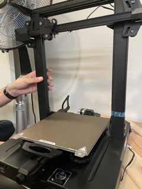
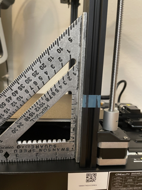
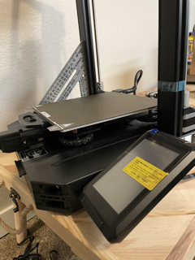
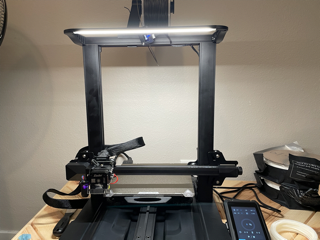
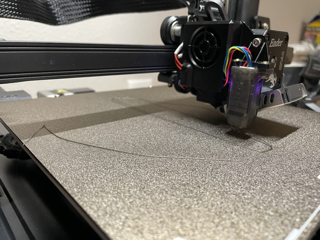
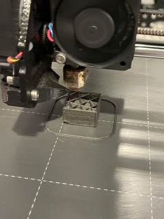
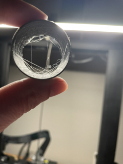
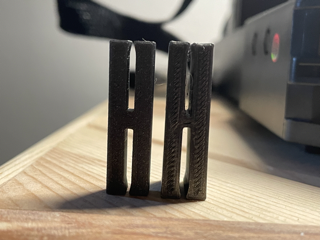
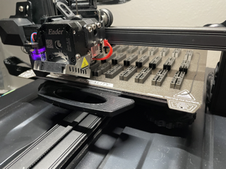

Assignment 3
Do this:
- Build the printer (document!)
- Print 3 cubes: low, standard, and super quality
- Print 1 cube with a concentric top
- Print 2 tubes with varying z-alignment and wall thickness
- Print 2 cylindars, one with spiralized contour, and another on its side with supports
- Model a Clip that will hold two pices of cardboard together and can survive a good shake
- Print 15+ of them
OutCome: Survives Shaking!!

This image is a photo of the shakedown.
Source Files
Cube stl Cuyclinder stl Clip stlProcess Documentation
Printer Build: Ender 3 S1 Pro
Building the printer was very straightforward. We spent about an hour getting the parts out, verifying and learning about items, and then assembly.
 
The light flickered while printing, so investigating the power supply and consulting Bard, I learned there's a switch to 115V in the back of the printer. The flickering was fixed.
The protocol for tramming is to find the auxillary leveling feature in settings, and, as the extruder bulk moves around the bed, place a pieces of paper under and wiggle wiggle wiggle. Adjusting the knobs then raises or lowers the bed in that area so that the paper can still wiggle, but there's a tension present.
After setting everything up, however, my first several test runs weren't runing well.
I noticed the bed was rocking side to side earlier on, but I thought it was normal. Tightening the knobs didn't seem to do anything, so I assummed. You should never assume.
According to Ricky Impey, a YouTuber, your bed shouldn't rock, and you should only have to level your bed once in a rare while. Watch here.
So I went hunting under my machine and tightened some things
Cubes
Cubes are an excellent object to print. Looking at mine, I can tell which settings employed. I also see a huge jump in quality when I finally figure out my bed rocking situation.
| Shape | Notes | Time to Print (min) | Modeled Dimensions (cm) | Printed Measurements | |
|---|---|---|---|---|---|
| Cube | Image | Low Quality | 19 | 2cm x 2cm | - |
| Cube | Image | Standard Quality | t2cm x 2cm | -- | |
| Cube | Image | Super Quality | 40 | 2cm x 2cm | -- |
| Cube | Image | Standard w/ conentric top | 22 | 2cm x 2cm | -- |
Tubes
I didn't realize someof the shapes were tubes. I assummed they were all cylinders. So, I made several cylinders with 1 and 2 wall thickness:) The 1 wall thickness let to see a subtle shadown of the infill, which I thought was beautiful.
Once I got through that confusion, though, the delicate tubes I made seemed very delicate. The random z-alignment setting created a web of strings within the tube versus the regular z-alignment.
| Shape | Image | Notes | Time to Print (min) | Modeled Dimensions (cm) | Printed Measurements | |
|---|---|---|---|---|---|---|
| Tube | Image | Standard, 1 wall thickness | 24 | 3.00 x 3.00cm | 3.07 x 3.04cm | |
| Tube | Image | Standard, 2 wall thickness, random z-alignment | t3.00 x 3.00cm | 3.01cm x 3.03cm |
Cylinders
 Cylinders!
Cylinders!
| Shape | Image | Notes | Time to Print (min) | Modeled Dimensions (cm) | Printed Measurements |
|---|---|---|---|---|---|
| Cylinder | Image | Standard, spiralized contour | 28 | 3.00 x 3.00cm | 2.96cm x 3.00cm |
| Cylinder | Image | Standard, printed on side with support | 53 | 3.00 x 3.00cm | 2.99cm x 3.05cm |
Clips

My youngest wanted to be involved in this portion -- I don't blame him. I drew out clips we saw in class and showed him how to draw this shape as acurve in Rhino and then extride it.
Our first iteration would clip two pieces together, but the wiggle didn't look promising. We increased the height of the clip and made the bridge between sides more narrow.
Fin!
3D printing is a whole world. Researching settings, filament, stl files on line, upgrades, tricks and tips, and troubleshooting showed me how large the online community is around this star trek-y machine.
My whole family is in love with out printer. We have a queue of prints from each of us (2 adults, 3 kids). The machines hum is thrumming when I fall asleep. The crackling of cooling PLA woke me once. Waking up to printed things is like Christmas.
This assignment, like all the others, helped me develop a sense for how to engage with the machine. All the steps broadened my awareness of 3D printing capabilities.